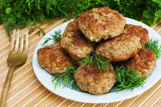
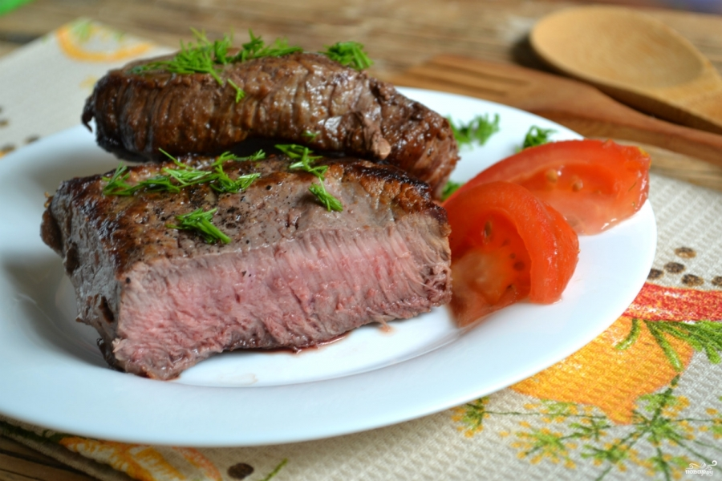
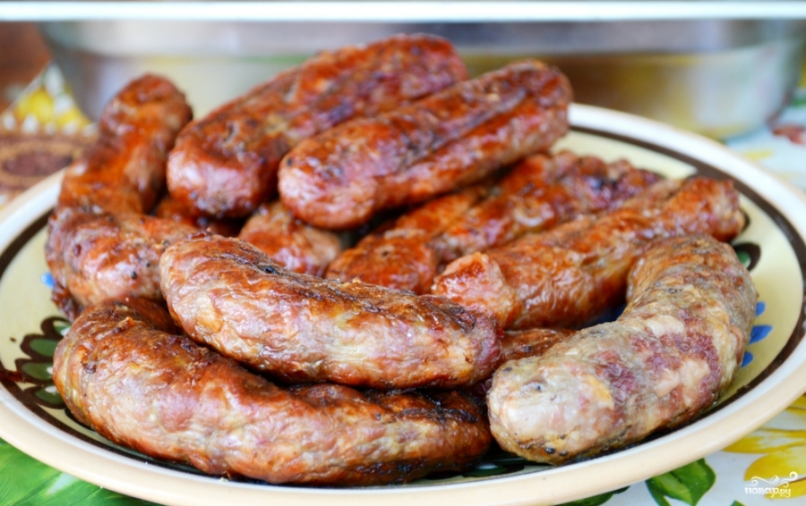
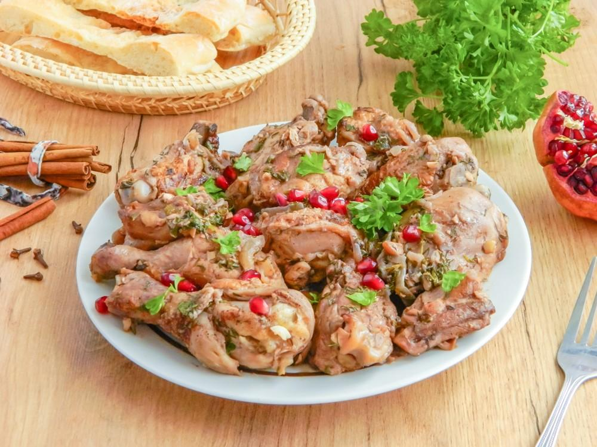

В первоначальном значении: кусок мяса, приготовленный на кости. В современном русском языке и русской кухне: изделие из мясного фарша, его аналога или заменителя.

Блюдо из жареной говядины, изначально один из видов стейка, стейк из головной части вырезки. Часто встречается подвид рубленного бифштекса, являющегося прототипом котлеты. Бифштексы также классифицируют по степени прожарки.

Особый вид грузинских пресервированных сырых колбас, нуждающихся в кулинарной обработке. Купаты готовят на углях или гриле, таким же образом, как и другие сырые колбасы. Оболочку из кишок протыкать не рекомендуется, так как это ведет к потере сока и жира.

Грузинское блюдо, представляющее собой сочную, ароматную курицу, томлённую в вине с добавлением грецких орехов, лука и специй.